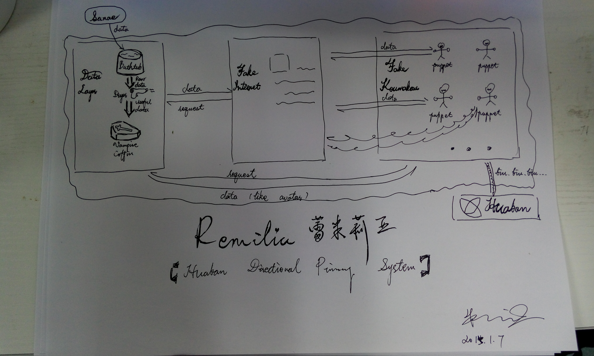
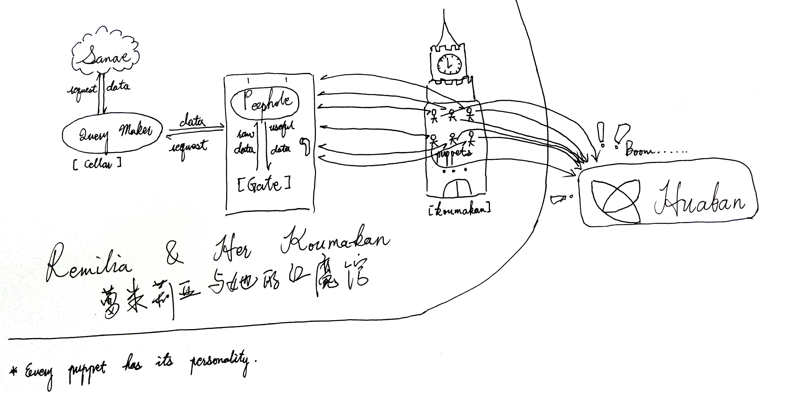

Remilia 结构图
大纲
蕾米莉亚？
其实这是花瓣的一个入库系统结构图，蕾米莉亚是这个项目的名字。
结构图

设计得不好，纯属做归档。
其中 SanaeHDCS 是另一套系统，给 RemiliaHDPS 提供数据的。
Data Layer
主要分为 Bathtub，Dryer，Vampire 三个部分。
Bathtub 浴缸
由 SanaeHDCS 提供的数据，存储在 MongoDB 当中。
Dryer 吹轰鸡
将 Bathtub 出来的湿数据变成干货的解析器，根据不同的数据用不同的规则进行解析。
Vampire 血族
全名其实是 Vampire Coffin，只不过把这个写到项目里面看着貌似不是很吉利，于是取了前半部分。吹轰机处理好的干活会存储在这边，实际上也是
MongoDB 里面。然后 Vampire 提供给外部接口，让其能够用正确的姿势获取正确的干货数据。
Fake Internet
一个视窗。
Fake Koumakan
假的红魔馆，里面一堆 Puppet。
每个 Puppet 都有自己的属性、人格、作息时间和生活。
01 / 12 / 2015
重新设计了 Remilia 结构图。

最后
好吧还是我的脑洞太大了。我知道你们看着这货不知所云。
好吧忘了这个东西吧，我只是无聊发一篇而已。